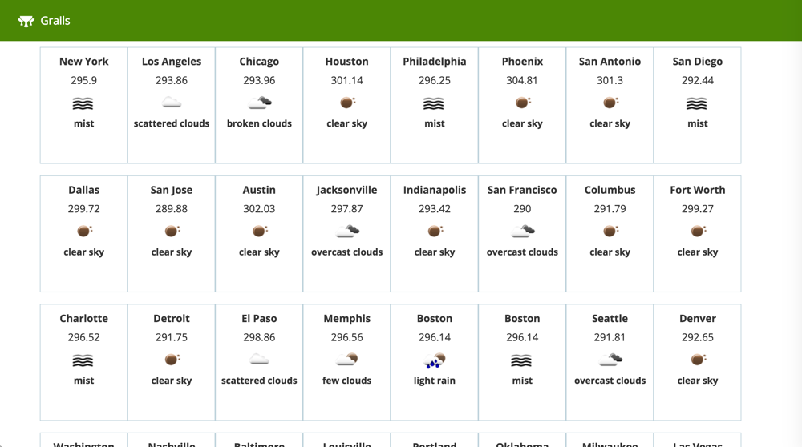
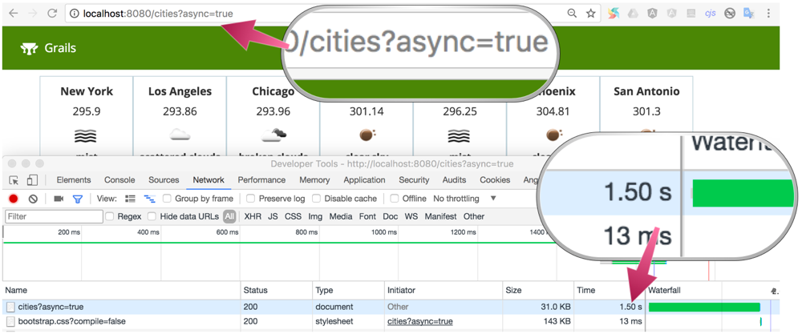
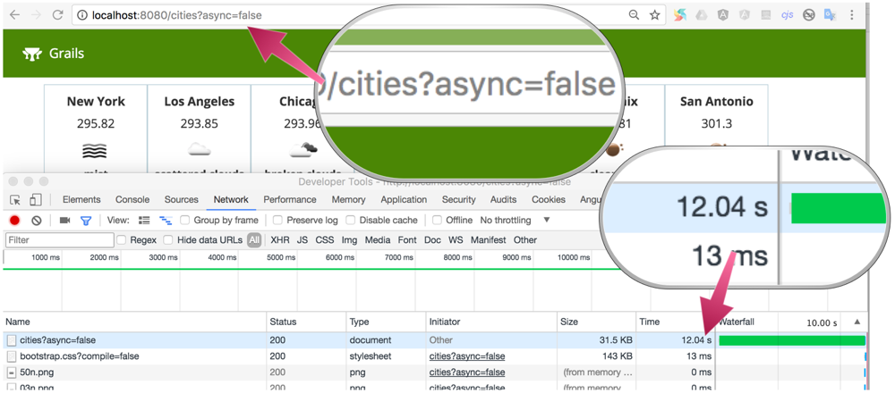

Grails Promises
Learn how to use Grails Promises and load multiple REST payloads in parallel.
Authors: Sergio del Amo
Grails Version: 4
1 Grails Training
2 Getting Started
2.1 What you will need
2.2 How to complete the guide
2.3 Initial Project
The initial folder contains the sample Grails application developed during the Grails Guide: Consume and test a third-party REST API.
It contains code to invoke the Open Weather Map API to retrieve the weather forecast for a city.
The OpenWeathermapService.currentWeather does a network request and builds an Object with the received JSON Payload.
The goal is to display a grid of forecasts:

3 Writing the Application
Added Grails 2.3 and since 3.3 an external project, the Async features of Grails aim to simplify concurrent programming within the framework and include the concept of Promises and a unified event model.
Your project already contains the async dependency:
link:{sourcedir}/build.gradle[role=include]Grails Async capabilites documentation can be found in async.grails.org.
3.1 Top Cities
Add a class with the largest cities in USA.
link:{sourcedir}/src/main/groovy/demo/LargestUSCities.groovy[role=include]3.2 Open Weather Service
A Promise is a concept being embraced by many concurrency frameworks. They are similar to java.util.concurrent.Future instances, but include a more user friendly exception handling model, useful features like chaining and the ability to attach listeners.
In Grails the grails.async.Promises class provides the entry point to the Promise API:
link:{sourcedir}/grails-app/services/org/openweathermap/OpenweathermapService.groovy[role=include]Add to OpenweathermapService the following methods:
link:{sourcedir}/grails-app/services/org/openweathermap/OpenweathermapService.groovy[role=include]| 1 | The task method, which returns an instance of the grails.async.Promise. |
| 2 | A PromiseList is returned which contains a union of all of the created grails.async.Promise instances |
Add an equivalent synchronous method.
link:{sourcedir}/grails-app/services/org/openweathermap/OpenweathermapService.groovy[role=include]3.3 Cities Controller
Create a controller named CitiesController which uses the previous service method:
link:{sourcedir}/grails-app/controllers/demo/CitiesController.groovy[role=include]| 1 | If the async parameter is true then use the previously created service method that returns a promise. |
| 2 | A set of named tasks is returned from the controller where each key becomes a resolved value in the model of the view. Grails will detect the fact that a promise is returned a create a non-blocking response. The createBoundPromise method is used to define a Promise that is already bound and doesn’t need to be resolved asynchronously. |
| 3 | If the async parameter is false then create the model synchronously. |
3.4 View
Render the weather forecast grid with a GSP:
link:{sourcedir}/grails-app/views/cities/index.gsp[role=include]4 Running the Application
Remember to setup a valid Open Weather Map API Key in application.yml
To fetch the weather forecast of the top largest USA cities leveraging the async capabilities of Grails visit:
If you visit http://localhost:8080/cities?async=true

Visit http://localhost:8080/cities?async=false to fetch weather forecasts synchronously.
